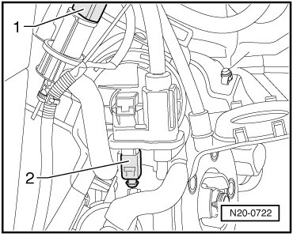
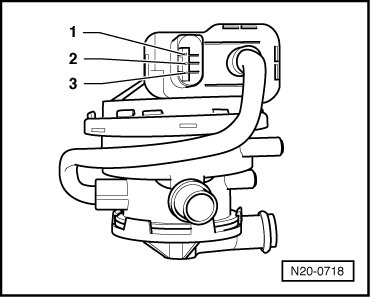
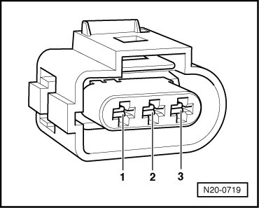

Leak Detection Pump, Checking
Diagnostic Procedures
Leak Detection Pump, Checking
Special tools, testers and auxiliary items required
• Multimeter (VAG1526) or Multimeter (VAG1715)
• Connector test kit (VAG1594)
• Wiring diagram
Test Prerequisites
• Fuses in E-box (plenum chamber, left) must be OK:

• Motronic Engine Control Module (ECM) Power Supply Relay (J271) must be OK, check:
• Ground (GND) connections between engine and chassis must be OK.
• Ignition switched off.
Test Sequence
- Remove rear right wheel housing liner.
- Disconnect 3-pin connector of Leak detection pump (LDP) (V144) (- 2 -).

Checking Resistance
- Measure resistance between terminals 1 + 3 of diagnostic pump.

Specified value: 640 to 720 ohms
- Measure resistance between terminals 2 + 3 of diagnostic pump.
Specified value: 12.0 to 20.0 ohms
If specified values are not obtained:
- Replace Leak Detection Pump (LDP) (V144)
- Erase DTC memory of Engine Control Module (ECM) , Diagnostic mode 4: Reset/erase diagnostic data.
- Generate readiness code.
If specified values are obtained:
- Check wires according to wiring diagram.
Wiring, Checking
- Connect test box.
- Check wires between test box and 3-pin connector for open circuits according to wiring diagram.

Terminal 1+socket 80
Terminal 2+socket 25
Wire resistance: max. 1.5 ohms
- Also check wires for short circuit to each other, to vehicle Ground (GND) and to B+.
Specified value: infinite ohms
- Check wire between 3-pin connector terminal 3 and Motronic Engine Control Module (ECM) Power Supply Relay (J271) for open circuit according to wiring diagram.
Wire resistance: max. 1.5 ohms
- Erase DTC memory of Engine Control Module (ECM) , Diagnostic mode 4: Reset/erase diagnostic data.
- Generate readiness code.
If no malfunctions are found in wires:
- Replace Motronic Engine Control Module (ECM) (J220) --> [ Engine Control Module, Replacing ] Engine Control Module, Replacing.
Final Procedures
After the repair work, the following work steps must be performed in the following sequence:
1. Check the DTC memory. Refer to --> [ Diagnostic Mode 03 - Read DTC Memory ] Diagnostic Modes 01 - 09.
2. If necessary, erase the DTC memory. Refer to --> [ Diagnostic Mode 04 - Erase DTC Memory ] Diagnostic Modes 01 - 09.
3. If the DTC memory was erased, generate readiness code. Refer to --> [ Readiness Code ] Monitors, Trips, Drive Cycles and Readiness Codes.